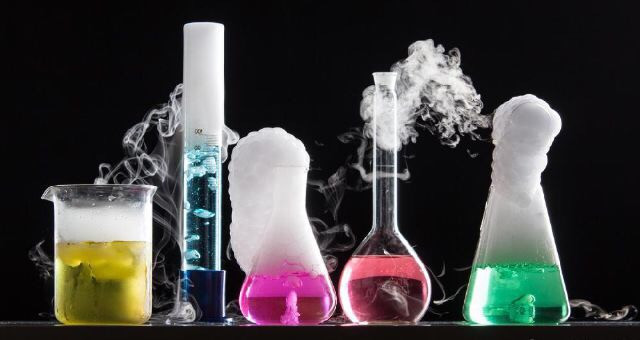

Chemical reaction, a process in which one or more substances, the reactants, are converted to one or more different substances, the products. Substances are either chemical elements or compounds. A chemical reaction rearranges the constituent atoms of the reactants to create different substances as products.
Chemical reactions are an integral part of technology, of culture, and indeed of life itself. Burning fuels, smelting iron, making glass and pottery, brewing beer, and making wine and cheese are among many examples of activities incorporating chemical reactions that have been known and used for thousands of years. Chemical reactions abound in the geology of Earth, in the atmosphere and oceans, and in a vast array of complicated processes that occur in all living systems.
melting ice
melting ice
Chemical reactions must be distinguished from physical changes. Physical changes include changes of state, such as ice melting to water and water evaporating to vapour. If a physical change occurs, the physical properties of a substance will change, but its chemical identity will remain the same. No matter what its physical state, water (H2O) is the same compound, with each molecule composed of two atoms of hydrogen and one atom of oxygen. However, if water, as ice, liquid, or vapour, encounters sodium metal (Na), the atoms will be redistributed to give the new substances molecular hydrogen (H2) and sodium hydroxide (NaOH). By this, we know that a chemical change or reaction has occurred.
Historical overview
The concept of a chemical reaction dates back about 250 years. It had its origins in early experiments that classified substances as elements and compounds and in theories that explained these processes. Development of the concept of a chemical reaction had a primary role in defining the science of chemistry as it is known today.
Model of a molecule. Atom, Biology, Molecular Structure, Science, Science and Technology. Homepage 2010 arts and entertainment, history and society
Britannica Quiz
Science Quiz
The first substantive studies in this area were on gases. The identification of oxygen in the 18th century by Swedish chemist Carl Wilhelm Scheele and English clergyman Joseph Priestley had particular significance. The influence of French chemist Antoine-Laurent Lavoisier was especially notable, in that his insights confirmed the importance of quantitative measurements of chemical processes. In his book Traité élémentaire de chimie (1789; Elementary Treatise on Chemistry), Lavoisier identified 33 “elements”—substances not broken down into simpler entities. Among his many discoveries, Lavoisier accurately measured the weight gained when elements were oxidized, and he ascribed the result to the combining of the element with oxygen. The concept of chemical reactions involving the combination of elements clearly emerged from his writing, and his approach led others to pursue experimental chemistry as a quantitative science.
